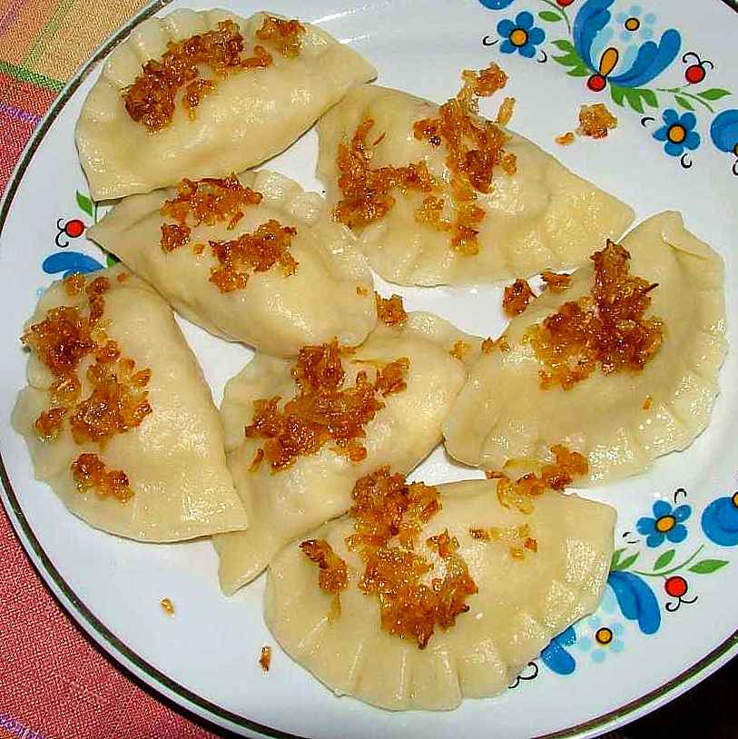

Pierogis

Description
Pierogi[a][b] are filled dumplings made by wrapping unleavened dough around a savory or sweet filling and cooking in boiling water. They are often pan-fried before serving.
Pierogi or their varieties are associated with the cuisines of Central, Eastern and Southeastern Europe. Dumplings most likely originated in Asia and came to Europe via trade in the Middle Ages.[1][2] The widely-used English name pierogi was derived from Polish. In some parts of Eastern Europe they are known as varenyky.[3] Pierogi are also popular in modern-day American and Canadian cuisine, where they are sometimes known under different local names.
Ingredients
- 2 cups (240g) King Arthur Unbleached All-Purpose Flour
- 1/2 teaspoon salt
- 1 large egg
- 1/2 cup (113g) sour cream
- 4 tablespoons (57g) butter, room temperature
- 1 cup (227g) mashed potatoes, warm
- 1 cup (113g) sharp cheddar cheese, shredded
Steps
- To make the dough: Mix together the flour and salt. Add the egg to the flour and combine. The dough will be quite clumpy at this stage.
- Work in the sour cream and soft butter until the dough comes together in a slightly rough, slightly sticky ball.
- Using just your fingertips, knead and fold the dough without adding additional flour until the dough becomes less sticky but still quite moist.
- Wrap the dough well in plastic wrap and refrigerate for 30 to 60 minutes, or up to 48 hours.
- To make the filling: Combine the warm mashed potato and cheese. Stir and mash until the cheese is melted and the filling is cool to the touch. Taste and adjust the seasonings with salt and pepper.
- To fill the pierogi: Roll half the dough 1/8" thick. Use a 2" round cutter to cut circles of dough. Repeat with the other half of the dough. Save the scraps; these can be snipped into small pieces and added to simmering soups.
- Place 1 1/2 teaspoons of filling on each round of dough. Gently fold the dough over, forming a pocket around the filling. Pinch the edges of the pierogi to seal, then seal again with the tines of a fork.
- At this point the pierogi can be frozen for up to 4 weeks, or refrigerated overnight, or cooked in a large stockpot of boiling salted water. Only cook about 10 pierogi at a time, so that they have room to float without sticking. When the pierogi float, they're done. The time will vary depending on if they're fresh or frozen.
- Sauté the shallots or onion in the butter in a large skillet until the onion begins to brown. Add the drained pierogi and cook until browned and crisped. Serve hot with additional sour cream, applesauce, or other condiments.